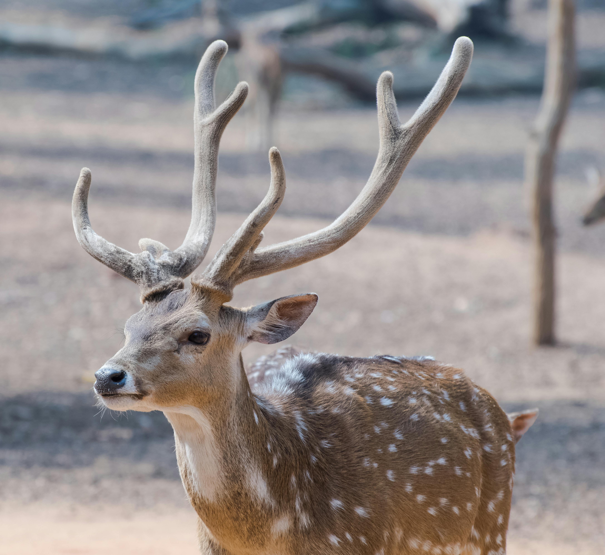
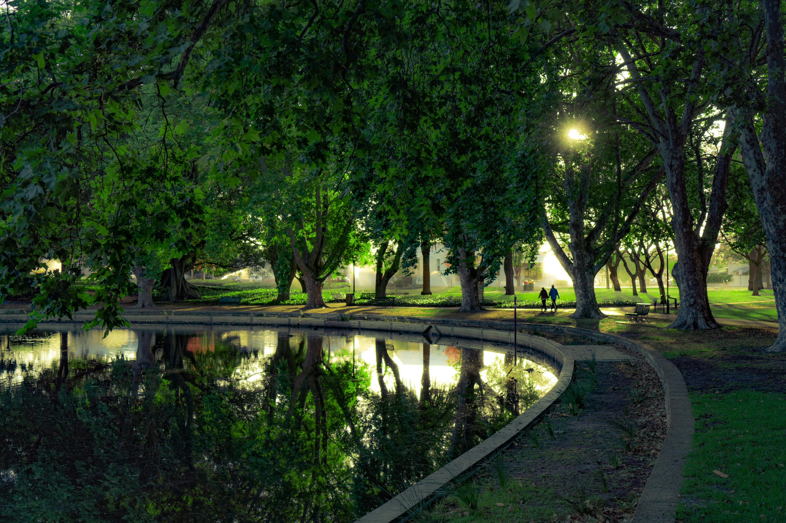
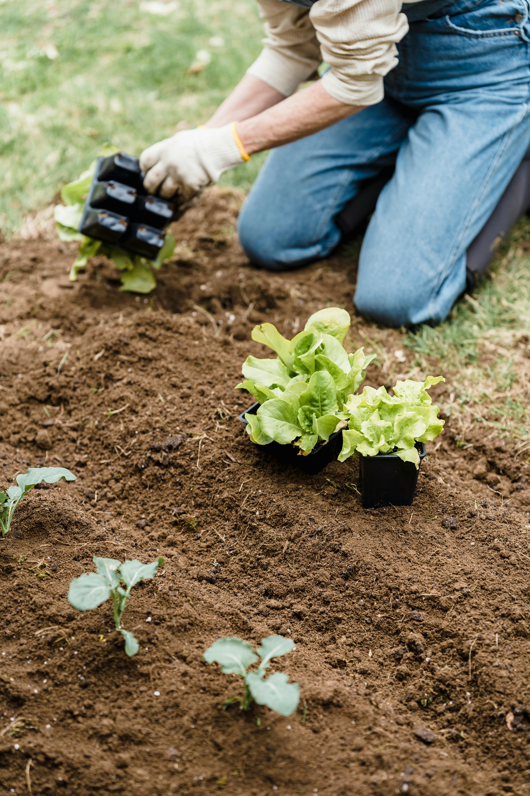

Healthy land supports ecosystems, wildlife and people. Protecting local nature is not only a global issue.
It also affects students, neighbourhoods, parks and the quality of everyday environments.

Biodiversity keeps ecosystems balanced
Different plants, insects and animals all contribute to healthy ecosystems. When biodiversity is protected,
habitats are stronger and more resilient.
- Supports ecosystem stability
- Protects food chains
- Helps habitats recover

Green spaces matter in towns and cities
Local parks, trees and shared outdoor areas can support birds, insects and plant life while also improving
community wellbeing.
- Cleaner public spaces
- More shelter for wildlife
- Better places for local people

Students can make a real difference
Small actions still matter. Students can reduce waste, respect green areas and take part in practical projects
that improve the local environment.
- Reduce litter and waste
- Protect local green spaces
- Join planting or clean-up activities